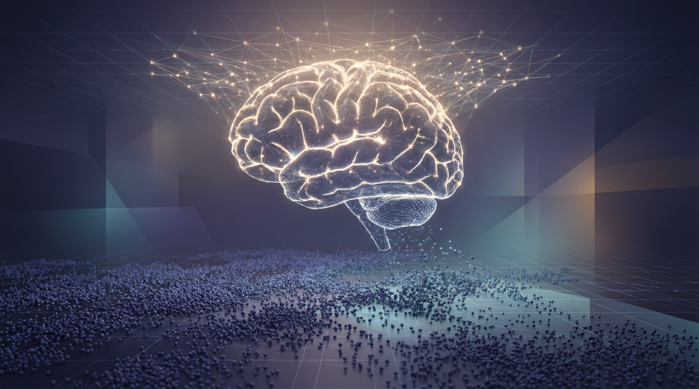
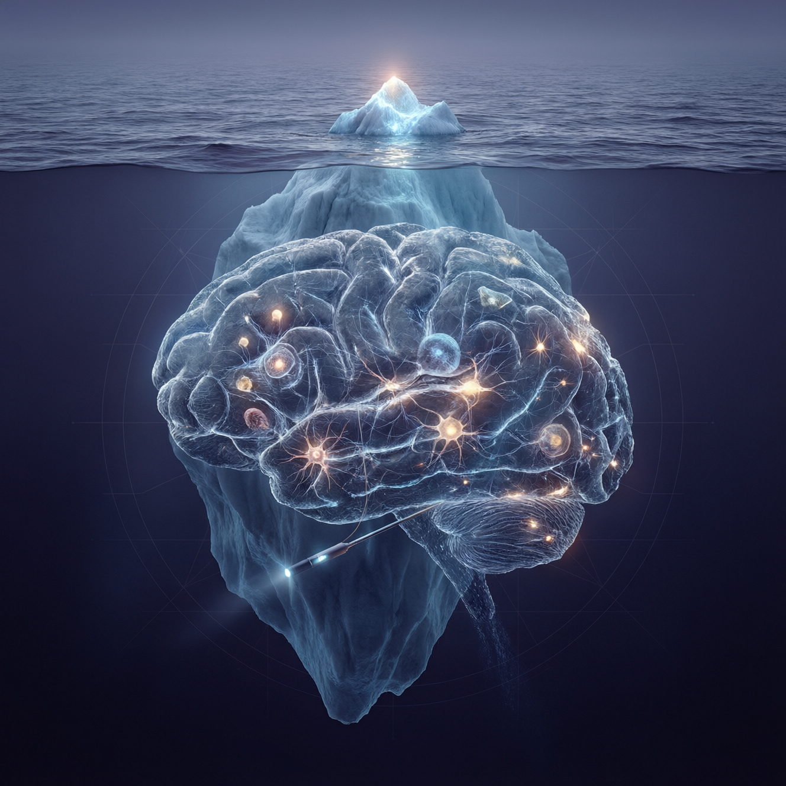
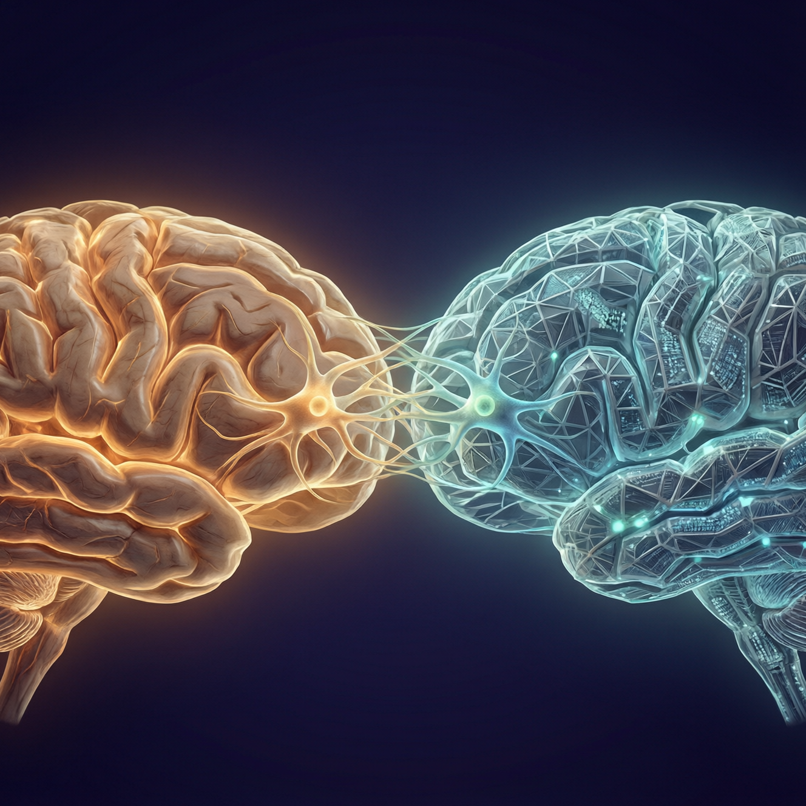
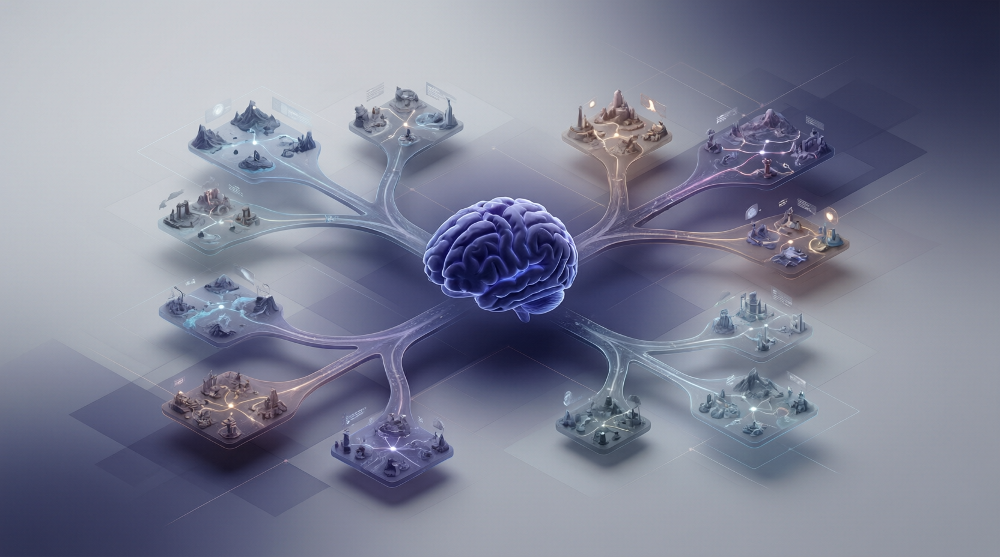

The Thesis · 核心命题
MetaMind 不只是一个方法，
它是一个范式的第一块拼图

MetaMind 证明了一件事：即便是 o3 这样的顶级模型，只要给它一套接近人类的认知架构，社会智能仍会显著上升。这意味着——模型的潜力远未被激发，瓶颈从来不是容量，而是「认知」的缺席。
大语言模型的知识来自人类的语料。这意味着它天然携带着对人类认知的底层建模——它已经隐含地知道人为何愤怒、何时委婉、如何权衡。我们要做的不是灌输，而是唤醒与结构化。MetaMind 的三阶段回路，正是这种「唤醒」的一种具体形态。沿着它向外推演，我们看到了一整套认知 AI 的蓝图。
Hidden Paradigms · 三个隐藏范式
论文没有点破，
但我们在过程中真正发现的东西
MetaMind 表面是「三个 Agent」。但把它拆开重看，我们发现它无意间实例化了三种更普适、可迁移到远超社会任务的认知范式。
Self-play / Self-involve
认知层面的自我博弈与自我卷入
MetaMind 的智能体在相互质询、修订彼此的假设——这本质是一场发生在「认知空间」里的自我博弈。更进一步：让一个模型同时扮演对话双方，它就能自己生成社交经验。
Self-involve（自我卷入）是关键升维：模型不只旁观他人，而是把「自己在建模对方、对方也在建模自己」这层递归心智纳入循环——从观察者变为参与者。
Cognitive Reasoning Pattern
可复用的认知推理模式
「先假设潜在心理状态 → 用规范约束筛选 → 对预期反应做校验」——这不是社会任务专属的技巧，而是一种领域无关的认知原语（cognitive primitive）。
它与自由发挥的思维链不同：CoT 追求更长，认知推理模式追求更对的结构。同样的模式可迁移到决策、谈判、教育、医疗——凡是需要「读懂看不见的状态」的地方。
Scaffolded Chain of Thought · 脚手架式思维链
自由 CoT 把「怎么想」完全交给模型，结果是又长又飘。MetaMind 提供的是一副认知脚手架：心理状态标记、规范过滤器、效用校验——它们不替模型思考，而是约束思考的形状，把推理导入有结构的层级。
这里藏着一个更大的判断：推理的质量取决于结构（inductive bias），而非长度。脚手架，就是我们注入的归纳偏置。当模型学会了脚手架，脚手架便可撤去——这正是从「提示工程」通向「认知能力内化」的桥。
Four Beyonds · 四个「超越」
认知 AI 要跨过的四道旧边界
当前范式建立在四个隐含假设上：规模即智能、语言即输入、数据靠标注、奖励可验证。MetaMind 让我们看到，这四条边界都可以被跨过。
Beyond Data Scaling Law
超越数据规模定律
规模曲线正在走平。但 MetaMind 让 o3 从 90.3 → 92.2、让 Claude 3.5 从 70.7 → 81.0——增益不来自更多参数或数据，而来自结构化的激发。
LLM 从人类数据中来，就天然内含对人类认知的底座。现有参数的潜力远未被激发；下一条增长曲线，是认知架构曲线。
Beyond Language Input
超越语言输入

语言是心理状态的有损、不完备的投影——露出水面的只是冰山一角。只处理 token，永远够不到水下的信念、欲望与情绪。
MetaMind 把心理状态的预测与更新提为一等公民。这是通往「主动的、完备的信息处理器」的关键：不等信息说全，而是主动重建语言背后的隐藏状态。
Beyond 人造数据
超越人工标注数据
人工标注永远覆盖不了社交的长尾，也刻画不出千人千面的偏好与行为。而 Self-play 能自己把这片空间生成出来。
实证已给出信号：STSS 中「约会 / 邀约」等依赖未言明约束的任务，从近乎失败（1.2 / 2.3）跃升到 65 / 67——正是自生成的元认知交互，补足了长尾社交与用户偏好/行为建模。
Beyond Verifiable Reward
超越可验证奖励
RLVR 在数学、代码上有效，因为答案可验证。但社会智能没有唯一正确答案——共情、得体、分寸，无法用一个终点比对。
MetaMind 的效用（共情 + 连贯）与校验，奖励的是认知过程本身的质量，而非某个局部结果。方向很清楚：奖励推理轨迹，而非终点标签。
Four Towards · 四个「走向」
跨过边界之后，认知 AI 走向哪里
如果我们能建模看不见的心智，能奖励看不见的过程，那么一条通往「会理解、会推演、会共处」的智能之路就此展开。

今天的「对齐」，多是在输出层面匹配偏好。但真正的对齐，应发生在对人的理解层面：先正确推断出对方的心理状态、价值与规范，再去回应。
MetaMind 在「理解这个人」而非「拟合这句回复」的层级上对齐——这才是安全、可信、可长期共处的 AI 的地基。其余三个 Toward，都建立在此之上。
Toward 真实的因果交互世界
不止关注行为，更关注心理状态——因为心理状态才是行为的因。当意图、情绪成为可推断的潜在变量，交互就成了对因果世界的干预，而非对表面模式的拟合。
Toward 世界仿真与未来推演

能建模心智，就能仿真社会、推演未来：把「他会怎么想 / 怎么反应」滚动展开成多条可能的未来分支，在行动前先在脑内「玩一遍」。
这正是我们 Mario 工作 的落点——把心智模型升级为可交互、可推演的世界模型，让智能体在仿真中预演后果、择优而行。
如果仿真真实世界只是起点，那么终点是构造「超世界」——一层套一层的认知宇宙。参照元宇宙的想象，但内核不是画面，而是认知：无数具备心智的智能体在其中共同演化，生成远超现实约束的社会经验。
它既是训练认知 AI 的无限数据引擎，也是研究智能、文明、协作如何涌现的思想实验场。在超世界里，智能体不再被动学习世界——而是创造并探索属于自己的世界。这是我们为之兴奋、也愿与同道一起去开垦的未来。
Kindred Minds · 同道
我们想与真正的认知科学家同行
认知 AI 无法只靠工程与算力堆出。它需要认知科学、发展心理学与计算认知的深度嫁接。以下是我们认为最同频的思想坐标——也是我们诚挚希望建立深度连接的对象。
逆向规划、贝叶斯心智理论、直觉物理与直觉心理——「把行为读作理性推断」正是我们因果交互世界的根。
概率化思维语言、RSA 语用模型、语言作为可执行程序——是我们「世界仿真与未来推演」的理论支点。
儿童在互动与游戏中习得社会认知——为「超世界游戏 / 自我博弈生成经验」提供了发展心理学的锚点。
我们不满足于让模型「答对」，我们想让它「懂得」。
MetaMind 是第一步；认知 AI，是我们要一起走的路。 — MetaMind Team